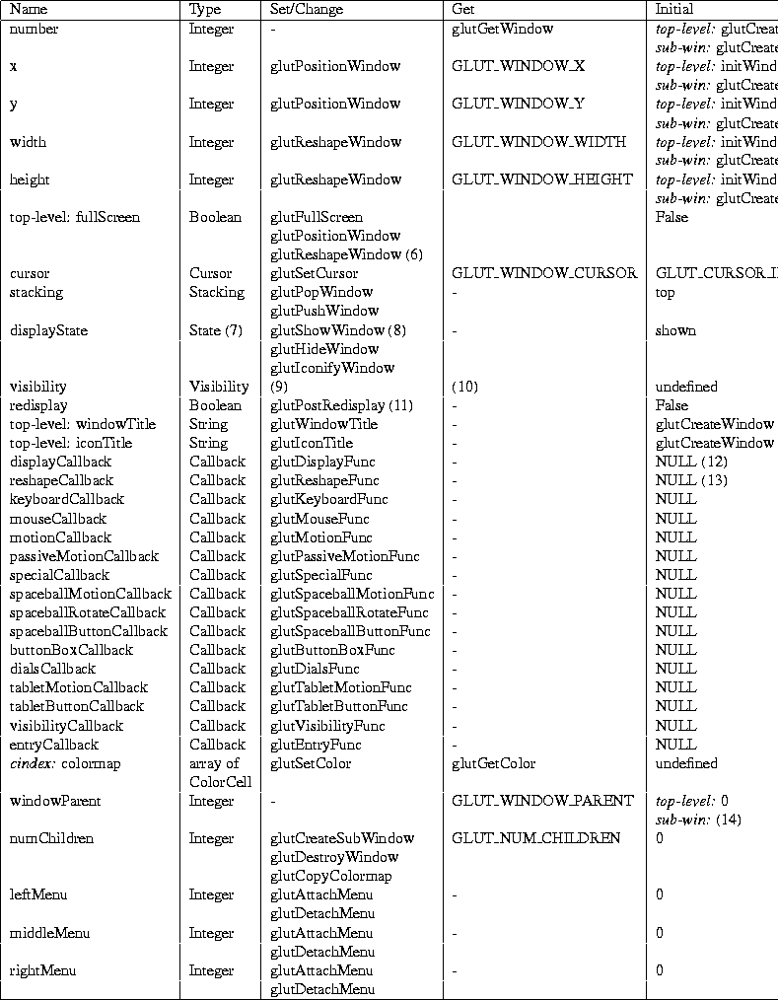

Next: A.3.2 Frame Buffer Capability Up: A.3 Window State Previous: A.3 Window State

-
- (1) Assigned dynamically from unassigned window numbers greater than zero.
-
- (2) If initWindowX is greater or equal to zero and initWindowY is greater or equal to zero then initWindowX, else window location left to window system to decide.
-
- (3) If initWindowY is greater or equal to zero and initWindowX is greater or equal to zero then initWindowY, else window location left to window system to decide.
-
- (4) If initWindowWidth is greater than zero and initWindowHeight is greater than zero the initWindowWidth, else window size left to window system to decide.
-
- (5) If initWindowHeight is greater than zero and initWindowWidth is greater than zero then initWindowHeight, else window size left to window system to decide.
-
- (6) glutFullScreen sets to true; glutPositionWindow and glutReshapeWindow set to false.
-
- (7) Subwindows can not be iconified.
-
- (8) Window system events can also change the displayState.
-
- (9) Visibility of a window can change for window system dependent reason, for
example, a new window may occlude the window. glutPopWindow and glutPushWindow can affect window visibility as a side effect.
-
- (10) The visibility callback set by glutVisibilityFunc allows the visibility state to be tracked.
-
- (11) The redisplay state can be explicitly enabled by glutRedisplayFunc or implicitly in response to normal plane redisplay events from the window
system.
-
- (12) A window's displayCallback must be registered before the first display callback would be triggered (or
the program is terminated).
-
- (13) Instead of being a no-op as most NULL callbacks are, a NULL reshapeCallback sets the OpenGL viewport to render into the complete window, i.e., glViewport(0,0,width, height).
-
- (14) Determined by currentWindow at glutCreateSubWindow time.
Next: A.3.2 Frame Buffer Capability Up: A.3 Window State Previous: A.3 Window State
Mark Kilgard
Fri Feb 23 08:05:02 PST 1996